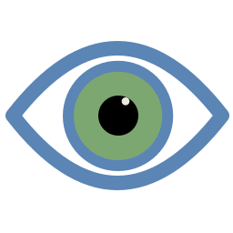

Live brand review surface. The logo, palette, typography pairings and sample components below render with the same CSS tokens used across the desktop app. Use the palette adjuster at the bottom to dry-run a colour change everywhere on this page in real time.
Almond/lens form. Lapis stroke + obsidian pupil + quartz catchlight.
Source: docs/branding/logo-eye-mark.svg.

160 pxClick any hex to copy. All accent + text pairings are validated against WCAG 2.2 AA contrast on both Bone and Graphite backgrounds.
Wordmark and editorial display in Georgia (system fallback) — upgrade
to Source Serif 4 / Freight Text via Adobe Fonts. UI sample uses
Avenir Next / Source Sans 3 fallback chain. See
BRAND_KIT.md for foundry options and licence cost.
1280 × 640 — what GitHub, X/Twitter, LinkedIn, Bluesky, Slack, Discord,
and iMessage will display when someone shares the repo URL. Source:
docs/branding/social-card-1280x640.svg.
Edit any colour token below — the entire page rerenders instantly.
Use this to dry-run alternative palettes before committing them to
tailwind.config.js. Reload the page to revert.
Tip: open DevTools → Elements → :root, edit the CSS custom properties directly for finer control (alpha, named colours, etc.).